专注计时
按任务选择正计时、倒计时或番茄循环。做题时可以设定一轮的长度，读书时也可以用正计时记录实际投入。支持暂停、休息和中断恢复。
计时可以全屏显示，也可以用置顶浮窗留在屏幕一角。背景、句子、声音和计时字体都可自定义。想留下一刻时，点相机就能导出带计时和背景的截图。
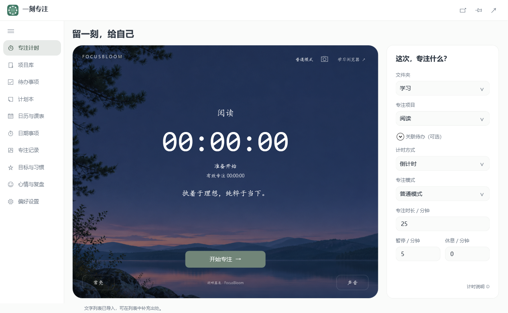
Windows · macOS · 本机优先
安排任务，也给自己留一段专注时间。
一刻专注把待办、日历和专注记录放在一起。开始严格专注后，可以按自己设置的名单限制其他应用。核心功能无需注册。
也可以在 Chrome、Edge 或 Firefox 中用独立扩展计时、限制网站和回看专注记录。
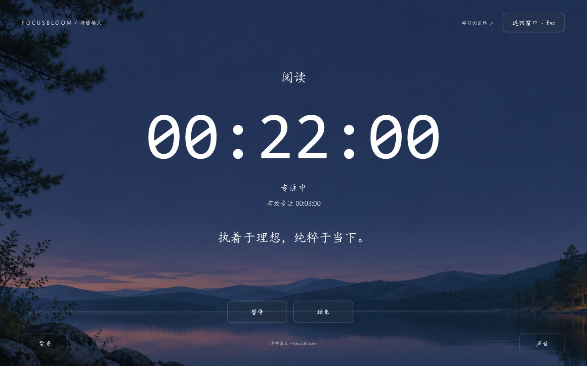
截图使用大学日常的示例资料。点击图片可以查看清晰原图。
按任务选择正计时、倒计时或番茄循环。做题时可以设定一轮的长度，读书时也可以用正计时记录实际投入。支持暂停、休息和中断恢复。
计时可以全屏显示，也可以用置顶浮窗留在屏幕一角。背景、句子、声音和计时字体都可自定义。想留下一刻时，点相机就能导出带计时和背景的截图。

为严格专注配置应用黑名单或白名单。可以挡住几个容易分心的应用，也可以只放行当前任务需要的应用。限制在专注和暂停时生效，休息或结束后解除。
内置学习浏览器有单独的网站规则。日常使用 Chrome、Edge 或 Firefox 时，可以用独立扩展设置网站黑名单或白名单，并在浏览器里计时。
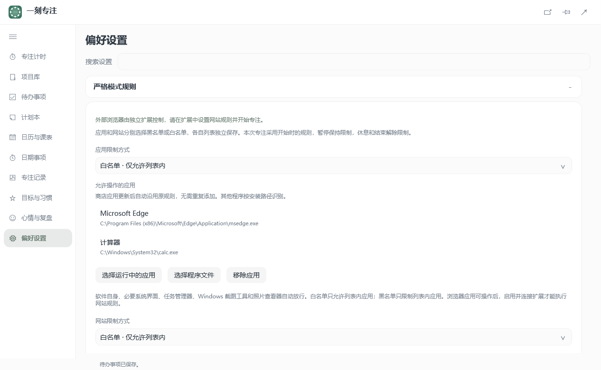
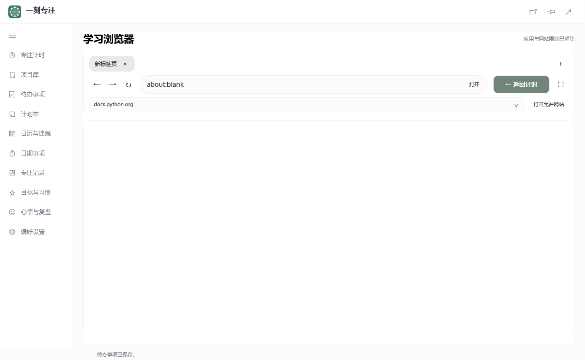
把一门课或一项长期工作建成项目，设置目标、截止日期和里程碑。可以用预设生成一组待办，再补上子任务、优先级和预计用时。
待办可以放进四象限查看，也能安排到日历。从待办直接开始专注，记录会关联任务和项目。回到项目里可以对照累计投入、剩余预估和还没安排的待办。
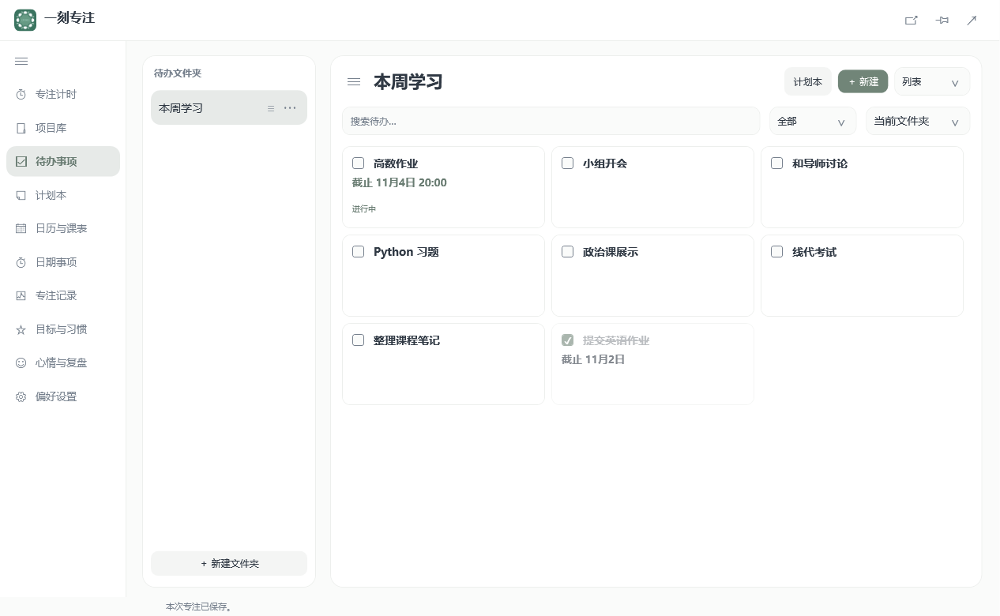
日计划适合列出今天要做的事。周计划既可以列整周目标，也可以分到每天。月计划可以列整月安排，也可以拆成每周清单。用月历和日期导航翻看历史或提前规划。
事项可以编辑、勾选或直接开始专注。点事项旁的时钟可查看对应的专注历史。删除前需要确认，已经保存的专注记录会保留。
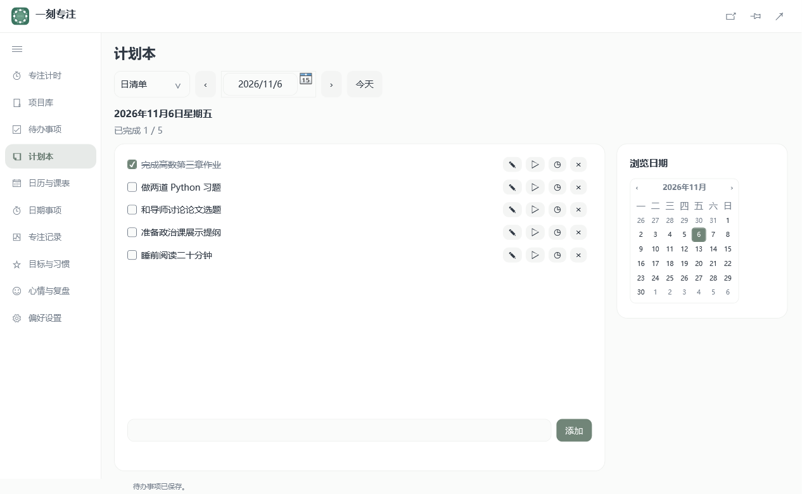
在日历查看待办截止、项目期限和安排的时间块。可以为日期事项设置倒数日和提醒，也可以将日程导出为 ICS。
课表支持从 CSV 导入课程，并保留各学期的课程与节次。临时调课或停课可按单次修改，切换学期时还能回看以前的课表。
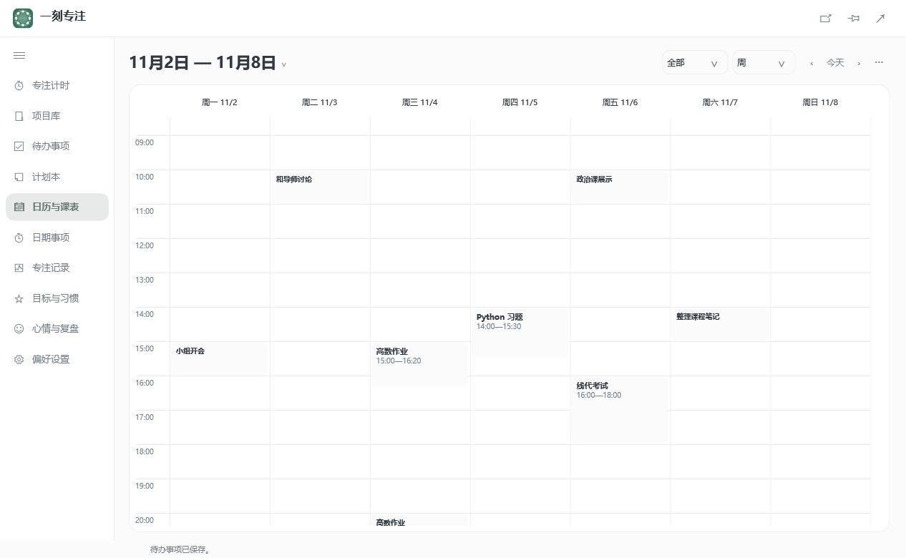
在时间轴查看每次专注的有效时长、对应事项和项目。结束后可以补记成果，写下下次从哪里继续。
按日、周、月、年或自定义日期查看时长、次数和活跃天数，比较各项目的投入占比。统计可导出为 Markdown 摘要或 CSV 明细。
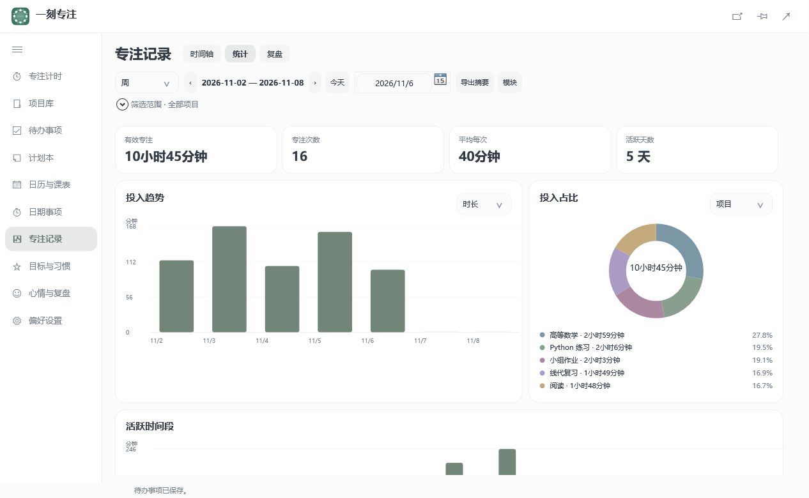
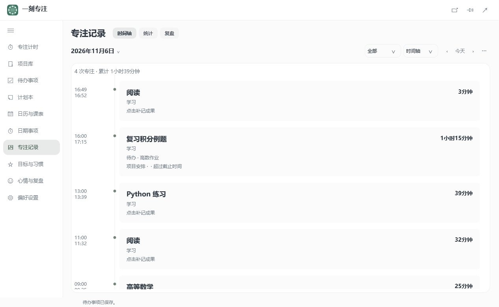
给专注时长、次数或习惯打卡设目标，按日期查看完成度。习惯可以设为每天、工作日或指定星期，完成后在日视图打卡。
在心情月历回看每天的状态。打开某一天可以写图文复盘，留下当天的感受、想记住的事和明天的第一步。
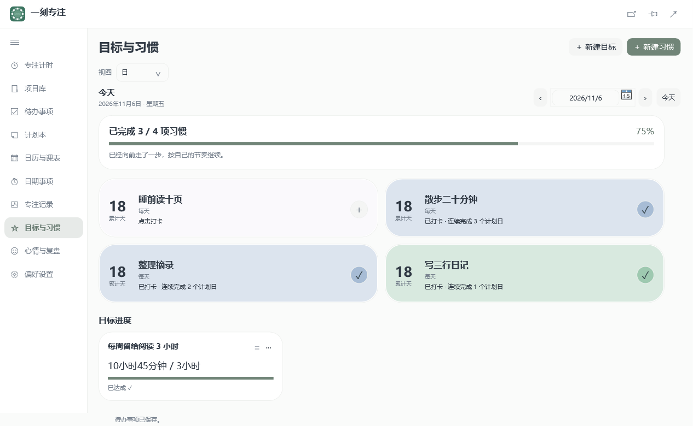
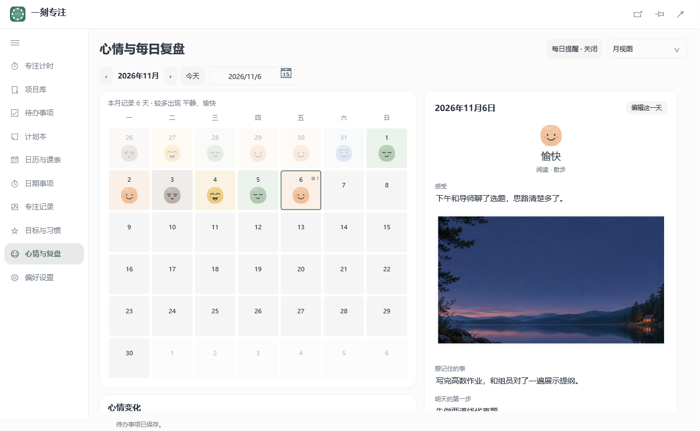
可以把计时、专注时长、待办、日历、日期事项、习惯和心情放到桌面，随手查看当前状态。应用提供简体中文和英文界面，可跟随系统切换明暗。
离线版的任务、计时记录和复盘保存在当前 Windows 用户的本机资料目录。手动和自动备份都包含自定义背景、声音、句子和复盘照片，可以带到另一台电脑恢复。
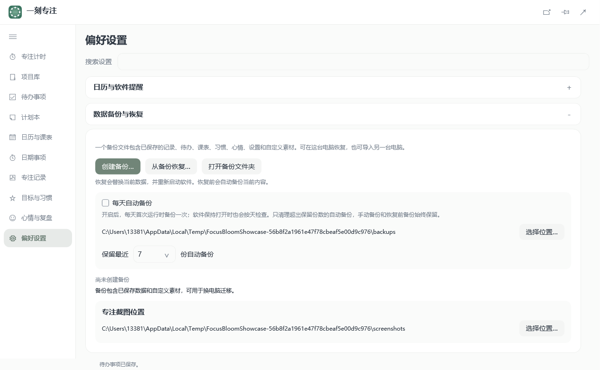
扩展可在 Chrome、Microsoft Edge 和 Firefox 中独立运行。安装后点击工具栏图标，即可开始正计时或倒计时，也可以打开独立专注页并全屏显示。关掉面板后，计时仍会继续。
用黑名单屏蔽容易分心的网站，或用白名单只保留学习与工作需要的网页。专注及暂停期间应用规则，休息或结束后恢复访问。
专注记录可按日期查看。规则、记录和偏好保存在当前浏览器，计时与限制均在本机运行，无需注册账号或安装桌面版。界面支持中英文、自定义配色和明暗主题。
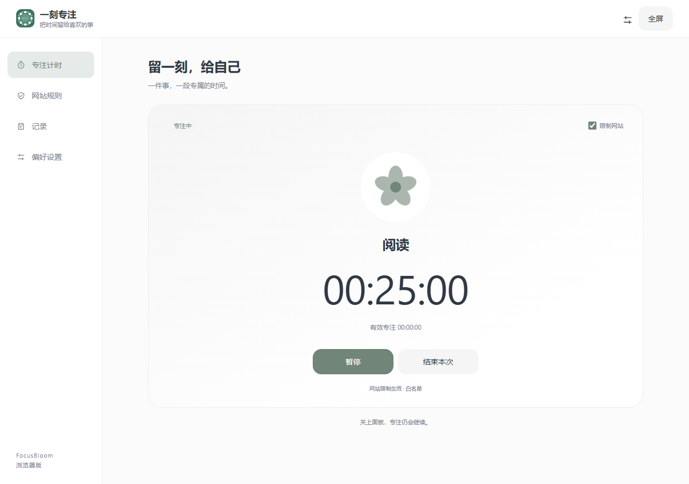
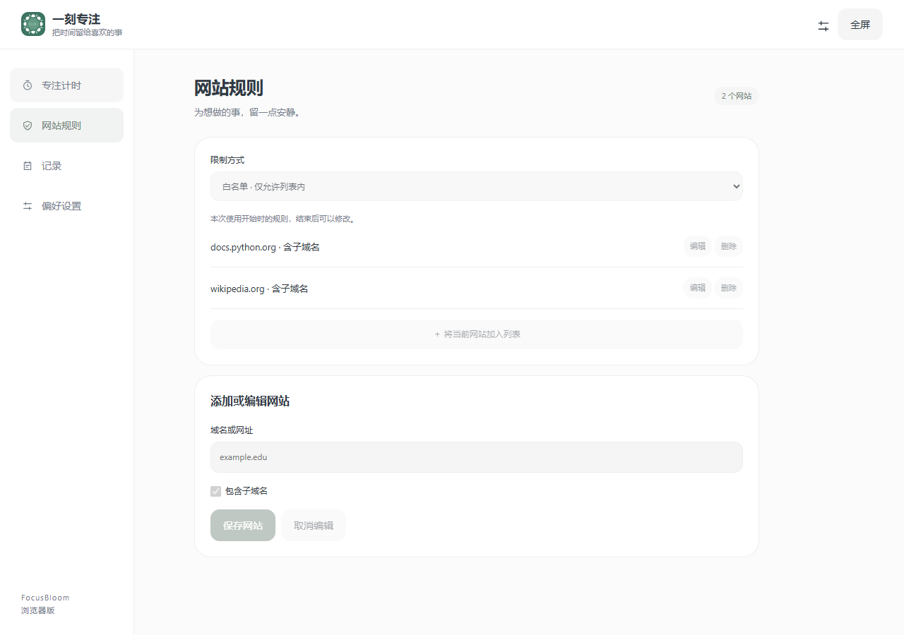
例如，准备期末考试时，可以在项目里拆出复习任务，把本周要做的事写进周计划，再从「做一套线代真题」直接开始计时。结束后在专注记录里补上错题和下一步，周末回看各科投入了多少时间。
双击下载的 MSI，在向导中选择安装位置和是否创建桌面快捷方式。安装器会自动添加开始菜单入口，完成时可选择启动 FocusBloom。覆盖安装前，请先从系统托盘退出旧版。
下载 Windows 安装包 ↓Apple 芯片选择 arm64，Intel 处理器选择 x64。可在「苹果菜单 → 关于本机」查看。
打开 DMG，把 FocusBloom 拖入「应用程序」，再从「应用程序」启动。
首次打开时，macOS 可能需要你在「系统设置 → 隐私与安全性」点击「仍要打开」。 查看 Apple 说明
Windows 与 Mac 可以通过 .fbbak 迁移资料，自定义背景、声音、句子和复盘照片也会一起恢复。
Mac 内置浏览器使用系统 WebKit，应用限制、桌面组件和菜单栏入口使用 macOS 系统接口。
扩展尚未在浏览器商店上架，可下载 ZIP 按下方步骤加载。
chrome://extensions/
edge://extensions/about:debugging#/runtime/this-firefoxWindows 11 预装 WebView2 Runtime，绝大多数 Windows 10 设备也已安装。内置学习浏览器提示缺少运行时时，可前往 微软官方下载页 补装。